NIVEA Men profitiert zwar dank der langen Tradition von hoher Bekanntheit, verliert aber an Konsistenz und emotionaler Relevanz: Produkt, Menschen und Kommunikation laufen nicht im gleichen Markenbild zusammen. Diese Diskrepanz liegt nicht zuletzt daran, dass sich insbesondere die Bedürfnisse jüngerer Zielpersonen geändert haben. Sie legen Wert auf eine klare Markenidentitäten sowie transparente und aufrichtige Kommunikation. Darüber hinaus muss eine Marke heute über soziale Kanäle mit authentischen und nahbaren Inhalten werben und zugleich durch Expertise und spürbare Effekte überzeugen.
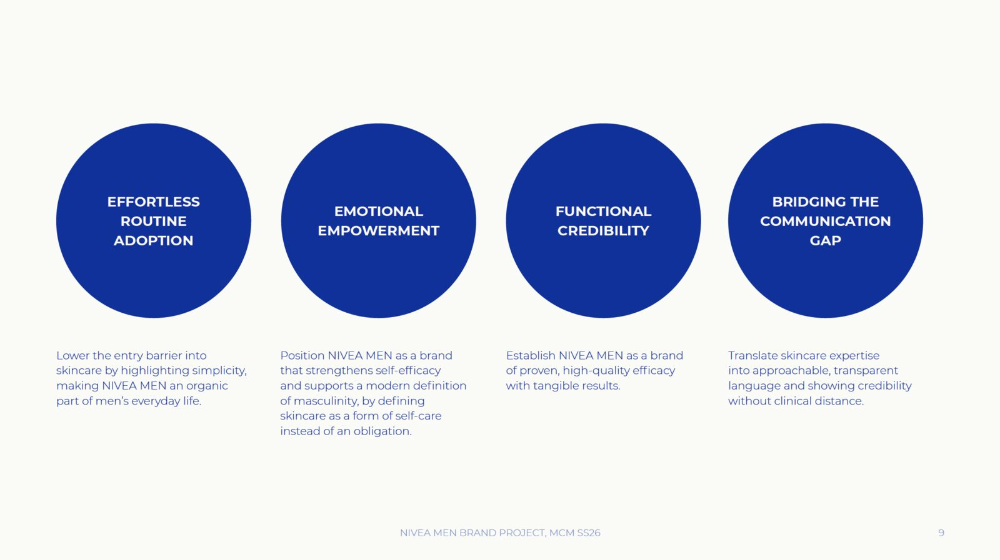
Aus der Markt-, Konkurrenten- und Zielgruppenanalyse abgeleitet ergibt sich eine klare nutzbare Zielpositionierung. Kondensiert auf ein Key Insight, stellt sie die Grundlage für die Kampagnenideenentwicklung dar.
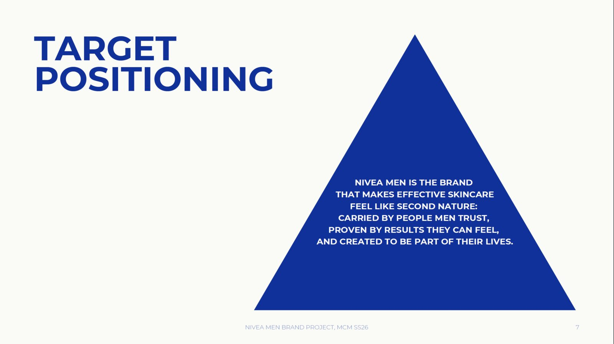
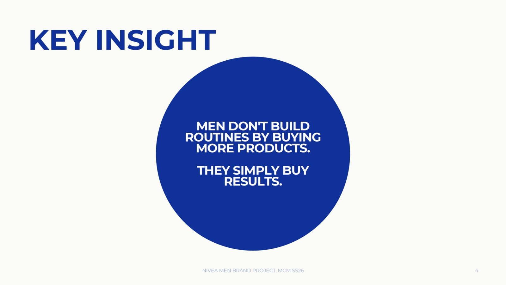
Effekte, die man einfach spürt
Die Hauptidee zeigt NIVEA Men als selbstverständlichen Teil des Alltags: eine Gruppe Freunde, ein gemeinsamer Ausflug, Momente von Nähe statt Hochglanz-Inszenierung. Auf dem Ausflug überzeugt einer der Freunde die anderen von der Nutzung von NIVEA Produkten, die sich organisch in die Szenen und Momente der gemeinsamen Erfahrung eingliedern — sie sind spürbar, stören aber nicht. Ton und Bildwelt knüpfen bewusst an das Vertrauen und die Wärme an, die NIVEA ausmachen.
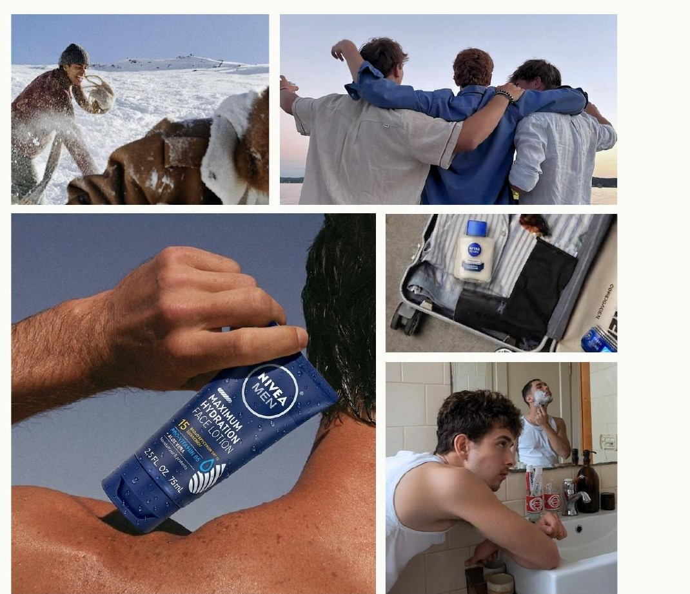
Von Owned/Organic Media, Paid Media, über klassisches OOH lässt sich die Leitidee konsistent und dennoch in spannender Form auf unterschiedlichste gängige Ad- und Assets übertragen. Um die Menschen nicht nur zu erreichen, sondern auch zu involvieren, dienen die Activations, konzipiert in Form von Events, Giveaway und einer WG-Challenge.
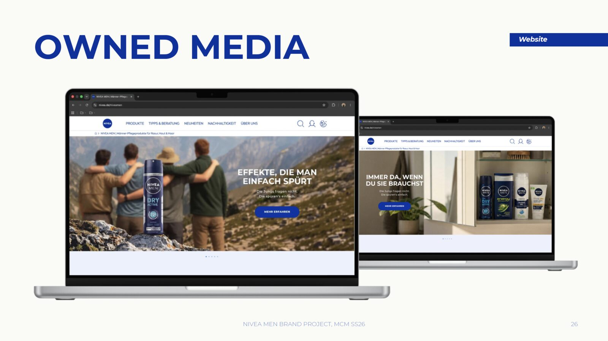
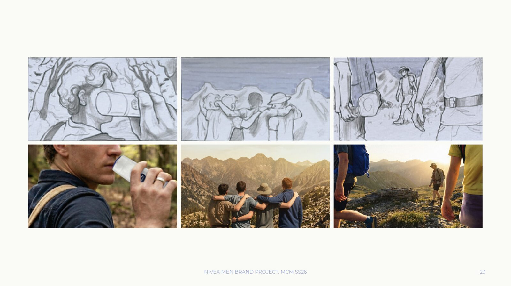
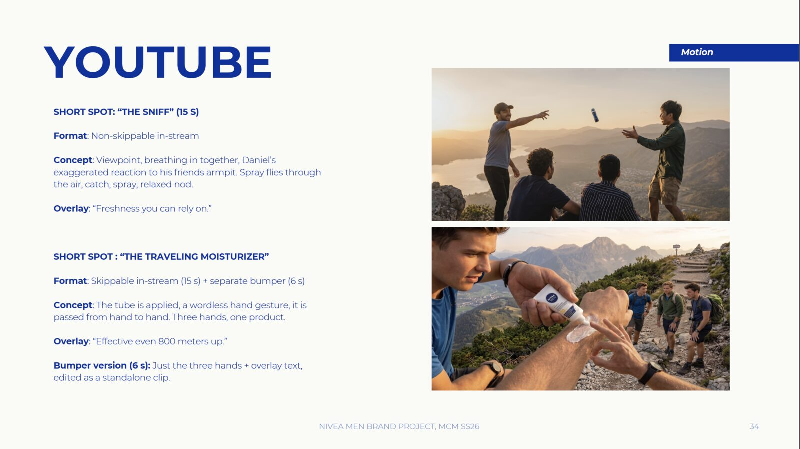
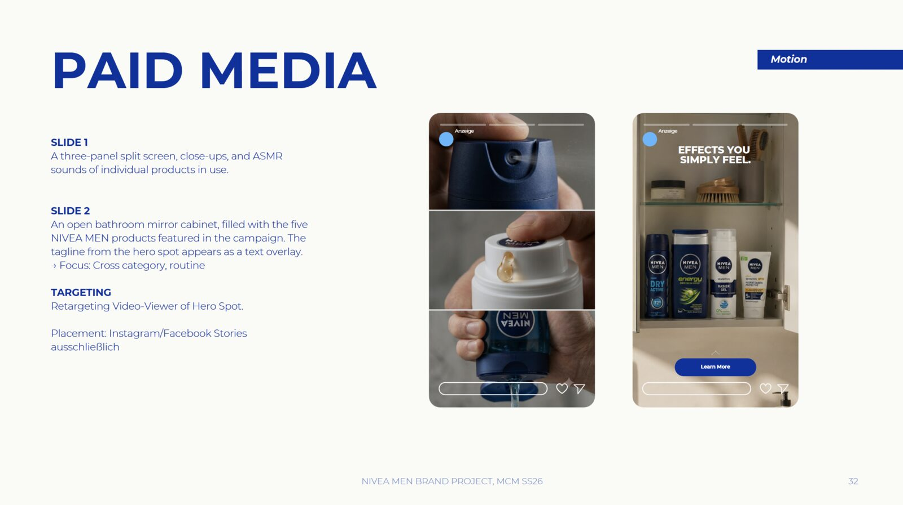
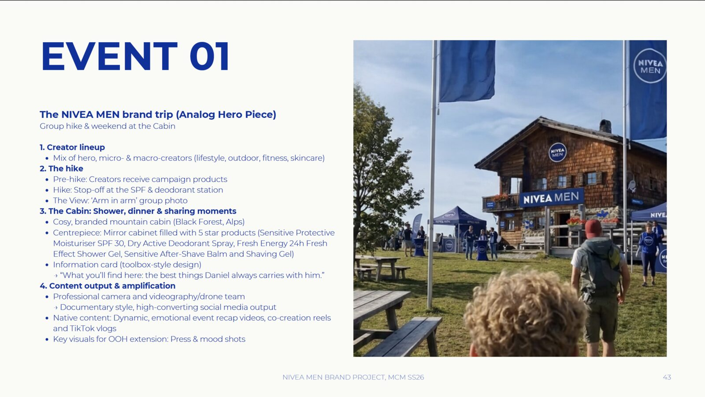
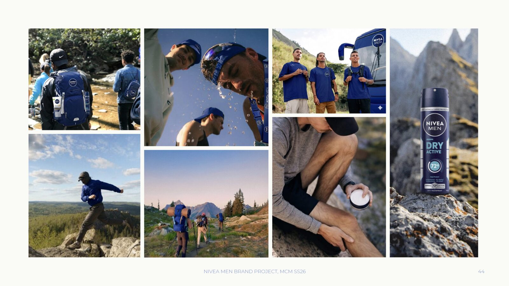
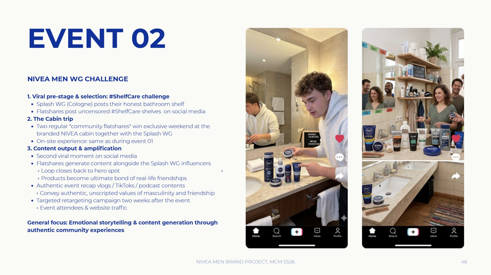
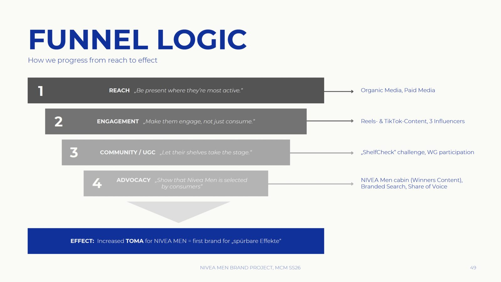
Was die Idee zu einer strategischen Leistung macht statt nur zu einer guten Idee: der explizite Abgleich mit den Kommunikationszielen.